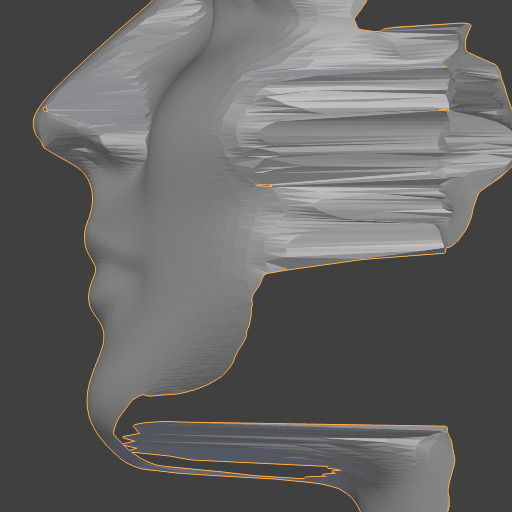
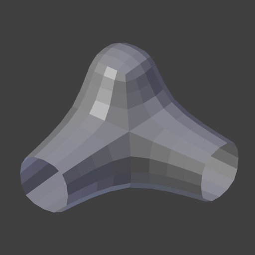
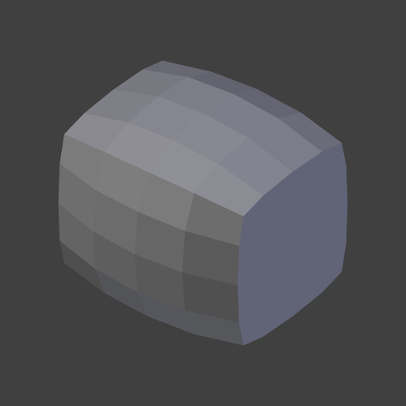
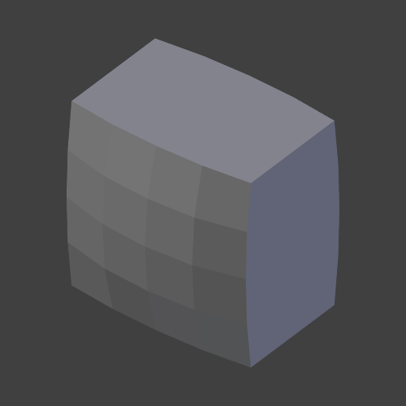
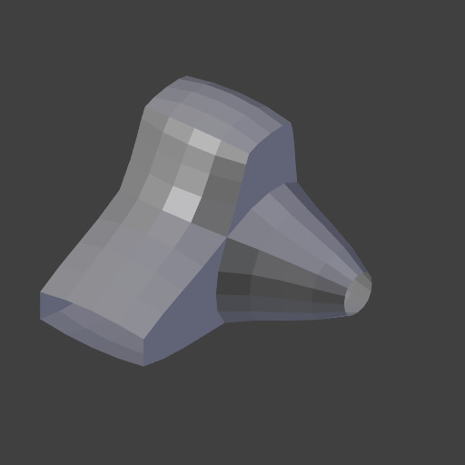
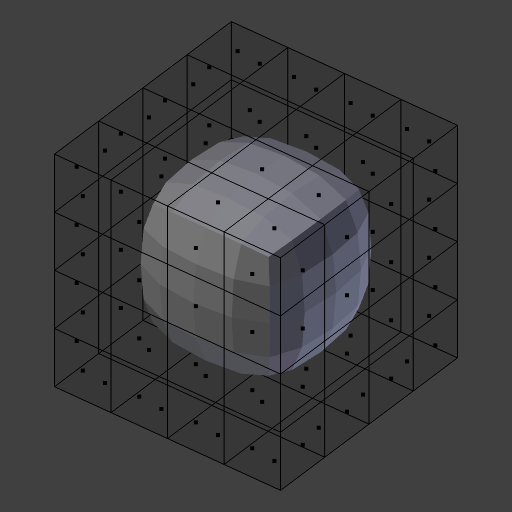
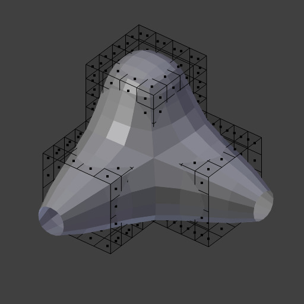

Laplacian Smooth Modifier¶
The Laplacian Smooth modifier allows you to reduce noise on a mesh’s surface with minimal changes to its shape.
It can also exaggerate the shape using a negative Factor.
The Laplacian Smooth is useful for objects that have been reconstructed from the real world and contain undesirable noise. It removes noise while still preserving desirable geometry as well as the shape of the original model.
This modifier is based on a curvature flow Laplace Beltrami operator in a diffusion equation.
Options¶
The Laplacian Smooth modifier.
- Repeat
Repetitions allow you to run the Laplacian smoothing multiple times. Each repetition causes the flow curvature of the mesh to be recalculated again, and as a result it removes more noise with every new iteration using a small Factor < 1.0.
When on 0, no smoothing is done.
Note
More repetitions will take longer to calculate. So beware of doing so on meshes with a large number of vertices.
With a factor of 0.5.¶ 
Repeat: 0.

Repeat: 1.

Repeat: 5.
With a factor of 2.0.¶ 
Repeat: 0.

Repeat: 1.

Repeat: 5.

Repeat: 10.
With a factor of -0.5.¶ 
Repeat: 0.

Repeat: 1.

Repeat: 5.

Repeat: 10.
- Factor
Controls the amount of displacement of every vertex along the flow curvature.
- Using a small Factor, you can remove noise from the shape without affecting desirable geometry.
- Using a large Factor, you get smoothed versions of the shape at the cost of fine geometry details.
- Using a negative Factor, you can enhance the shape, preserving desirable geometry.
- When the Factor is negative, multiple iterations can magnify the noise.
Factor: 0.0.

Factor: 0.5.

Factor: 2.5.

Factor: 0.0.

Factor: 1.0.

Factor: 10.0.

Factor: 50.0.
Factor: 0.0.

Factor: -20.0.

Factor: -50.0.

Factor: -300.0.
- Border
Since there is no way to calculate the curvature flow on border edges, they must be controlled separately. Border edges are smoothed using a much simpler method, using this property to control the influence.
Positive values will smooth the vertex positions, while negative values will “enhance” them by transforming them in the opposite direction.
With a factor of 2.5.¶ 
Border: 0.0.

Border: 1.0.

Border: 2.5.
Border: 10.0.
With a factor of 20.0.¶ 
Border: 0.0.

Border: 1.0.
Border: 5.0.

Border: 20.0.
With a factor of -30.0.¶ 
Border: -20.0.

Border: -50.0.

Border: -200.0.
- Axis X/Y/Z
Toggle buttons to enable/disable deforming vertices in the X, Y and/or Z axes directions.
X, Y, Z: Unselected.

X, Y, Z: Selected.
X, Z: Selected.
X: Selected.

X, Y, Z: Selected.
X, Z: Selected.

X: Selected.
- Preserve Volume
The smoothing process can produce shrinkage. That is significant for large Factor or large Repeat values. You can use that option to reduce that effect.
Off.

On.

Off.
On.
- Vertex Group
A vertex group name, to constrain the effect to a group of vertices only. Allows for selective, real-time smoothing or enhancing, by painting vertex weights.
Original Geometry No Group Chosen Vertex Weights Result


- Normalized
When enabled, the results will depend on face sizes. When disabled, geometry spikes may occur.

Original Geometry.

On.

Off, High Factor.
{kind=link}
{kind=link}
{kind=link}
{kind=link}
{kind=link}
{kind=link}
{kind=link}
{kind=link}
{kind=link}
{kind=link}
{kind=link}
{kind=link}
{kind=link}
{kind=link}
Hint
Meshes with a great number of vertices, more than ten thousand (10,000), may take several minutes for processing. You can use small portions of the mesh for testing before executing the modifier on the entire model.
Examples¶
|
Femme front view blend-file. |
Femme side view blend-file. |
Cube smooth blend-file. |
Shape enhanced blend-file. |
See also